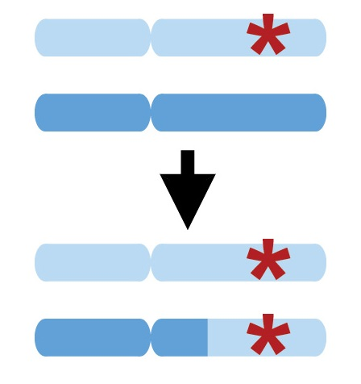
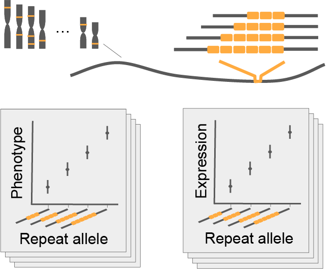
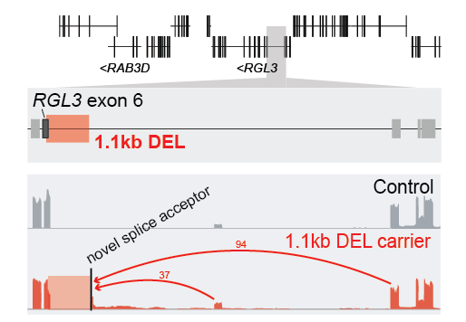
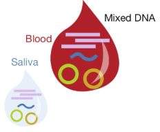
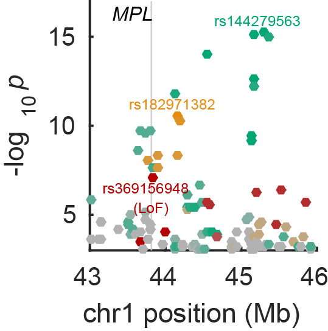

We use computational techniques to study inherited and acquired genetic variation, primarily in human population cohorts such as UK Biobank and All of Us. Our work often involves developing statistical or algorithmic methods to detect subtle signals of latent genetic variants (e.g., tandem repeats, structural variants, and somatic variants) and their effects on human health. Many of our projects have arisen from collaborations with Steve McCarroll’s lab at Harvard Medical School, and we have also had fruitful collaborations with Peter Park’s and Chikashi Terao’s labs.

Cells throughout the human body accrue DNA mutations over the life course, such that every person is a “mosaic” of cells with slightly different DNA. Occasionally, mutations affect megabase-scale genomic regions or entire chromosomes, generating mosaic chromosomal alterations (mCAs). We have developed statistical methods to detect and study mCAs in biobank genomic data sets. These analyses have revealed ways in which inherited genetic variants influence mCA acquisition and clonal expansion. Our work has also implicated early developmental mCAs as a likely contributor to sporadic cases of autism spectrum disorder and refined the relationship between age-acquired hematopoietic mCAs and blood cancer risk.

Human genomes contain millions of repeat elements at which a DNA motif appears multiple times in a row. Tandem repeats are prone to expansion and contraction and are among the most mutable of genomic elements. This leads to length variation between alleles inherited by different people as well as somatic expansion of unstable alleles within a person. We have developed computational techniques to assess inherited and acquired repeat length variation in biobank cohorts. This work has identified many repeats that confer disease risk or alter gene expression, and it has also found many genomic loci at which inherited variants influence somatic repeat instability.

Genomic structural variants, including large insertions, deletions, and duplications of DNA, are the largest inherited variants in the human genome, yet are the hardest to “see” in population cohorts with short-read sequencing or SNP-array genotyping data. We have developed computational methods to genotype structural variants in such data sets using a variety of statistical techniques, particularly by leveraging haplotype-sharing within large cohorts. These approaches, which we have also applied to rare protein-coding variants, have identified common structural variants that underlie some of the strongest associations of genetic variation with human phenotypes and rare variants with large effects on health-related traits.

Whole-genome sequences of human biosamples commonly contain small amounts of non-human DNA. This is particularly true of saliva samples, for which ~10% of DNA is often derived from bacterial species present in the oral microbiome. Blood samples also contain trace amounts of DNA from common viruses resident in each person’s blood system. We have studied inherited genetic influences on the oral microbiome and blood DNA virome in large human sequencing data sets, finding ways that human genetic variation interacts with microbial and viral variation. These genetic instruments have shed light on the extent to which epidemiological associations with disease phenotypes are causal.

We have developed software tools that have been widely used in genome-wide association studies (GWAS). These include the Eagle software for statistical haplotype phasing and the BOLT-LMM software package for linear mixed model (LMM) association testing, heritability estimation (BOLT-REML), and phenotype prediction.